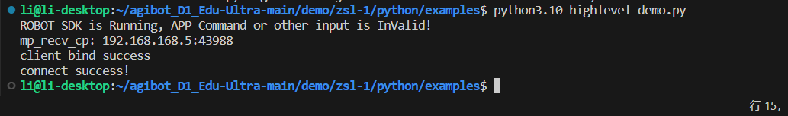

六、FAQ
6.1：connect time out
运行 SDK 程序后存在连接超时，提示信息为：
client bind success
connect time out
error async receive from
请按照文档修改 SDK 配置文件中 target_ip 参数。
若与设备通讯采用非 WiFi 直连，还需按照文档修改 SDK_CLIENT_IP 参数。非 WiFi 直连时，设备会有概率出现运控绑定 SDK 失败，请按照文档有线连接绑定 IP 失败修改参数。
6.2：有线连接绑定 IP 失败
在配置SDK_CLIENT_IP后，若使用 wlan0 网络或者 eth0 网络进行 SDK 控制时，会存在设备开机后网络未初始化完成，对应网卡未分配 IP 地址，导致运控程序绑定 IP 地址失败。
具体表现为 SDK 程序运行后提示：connect time out，通过登录设备主控后，执行命令 sudo lsof -i -P -n -c mc_ctrl | grep 43997 查看输出内容，运控对应端口未被绑定。
通过修改设备主控内
/etc/systemd/system/robot-launch.service
文件配置可修复，在 Service 里面添加一行
Environment="ROBOT_NET_INTERFACES=wlan0"
其中wlan0为对应网卡名称，若使用有线网络可修改为eth0。
完整配置文件如下：
[Unit]
Description=Run robot-launch at startup
After=network.target
[Service]
ExecStart=robot-launch server
ExecStop=/usr/local/bin/robot_launch_stop.sh
TimeoutStopSec=5s
Restart=always
User=root
Environment="ROBOT_HOME=/home/firefly"
Environment="ROBOT_LOG_DIR=/userdata/log"
Environment="ROBOT_NET_INTERFACES=eth0"
[Install]
WantedBy=multi-user.target
参数配置后需进行重启设备生效！
此参数配置后有概率导致四足机器人程序无法启动！
配置 ROBOT_NET_INTERFACES 后程序会检测所配置网卡是否被分配 IP，若网卡始终没有 IP，则会导致四足机器人程序无法启动。
6.3：使用 wlan0 连接环境 wifi，每次重启设备都不会自动连接
设备上 AP 与 wlan 网卡存在冲突，部分版本有清除自动连接功能，若需要关闭清除自动连接功能，可执行以下命令：
sudo systemctl stop networkmanager-cleanup.service //关闭网络清除服务
sudo systemctl disable networkmanager-cleanup.service //禁用网络清除服务
6.4： Python 导入失败
确认脚本是否将 lib/<model\>/<arch\> 加入sys.path；
Python 版本需与扩展模块匹配，python 版本必须为 3.1.0 版本；

6.5： C++ 链接失败？
确认 lib/\<model\>/\<arch\> 中存在对应 .so 文件；
确保 CMake 检测到正确架构（x86_64 / aarch64）。
6.6： 运控中获取设备状态获取接口支持频率？
lowlevel 的 500hz， highlevel 的 50hz。
6.7： SDK 中控制接口支持频率？
控制数据最大可以支持 500hz 发送，一般来说 20～50hz 就可以保证设备稳定运行。
6.8： SDK 程序是否为线程安全？
SDK 程序为线程安全。
6.9： SDK 是否存在通讯检测？
运控程序会检测是否持续收到 SDK 数据，若 3 秒内未收到数据，则认为 SDK 通讯中断，设备会自动切换阻尼模式趴下。
6.10： 在机器内通过 service 启动运控程序时，如何避免机器自身程序未启动？
service 中 After 参数可以配置为 robot-launch，robot-launch 服务会启动机器自身程序。
6.11： 手柄遥控和 sdk 遥控可以同时切换吗？
当前版本 SDK 优先级高于手柄遥控，无法同时切换。
6.12： 获取到的 IMU 数据是否是原始数据？
获取到的 IMU 数据是原始数据。
6.13： 获取到的 IMU 数据感觉存在误差？
设备体内 IMU 数据受产品型号影响，精度存在误差，若对 IMU 精度有更高要求，需要单独采购高精度 IMU 在上身使用。
6.14： 使用过SDK控制后，再使用手柄遥控控制设备时，发送站立指令为什么设备会原地做'俯卧撑'
如果配置过 SDK_CLIENT_IP 参数，则运控启动时会绑定对应IP，若IP不存在，则会导致此现象。
6.15： 四元数转换为欧拉角时，旋转顺序是什么？
欧拉角顺序为 ZYX，即先 Z 轴旋转，再 Y 轴旋转，最后 X 轴旋转。
6.16： Highlevel 与 Lowlevel 可以同时使用吗？
Highlevel 与 Lowlevel 不可以同时使用，且在切换两种接口时，要预留一定时间等待设备端口释放。
6.17： 为什么运控程序升级后，SDK 无法控制设备？
运控程序升级后，运控相关配置会被覆盖，需要重新配置 SDK_CONFIG 与SDK_CLIENT_IP 参数。
6.18： 是否有 ROS 接口？
暂无 ROS 接口。
6.19： 使用 SDK 时，程序卡在 initRobot 函数不往下执行了？
SDK 依赖 boost 1.74.0 版本，若使用版本过旧，可能存在结构体变化导致的兼容性问题。
6.20：是否支持在四足机器人本体部署控制逻辑
不建议在四足机器人本体部署控制逻辑，四足机器人内部无多余算力
6.21：升级后找不到四足机器人本体的WIFI
有可能是因为升级导致四足机器人WIFI名发生了更改，可在 /userdata/bak/system/hostapd.conf 文件处进行WIFI名的查看和修改